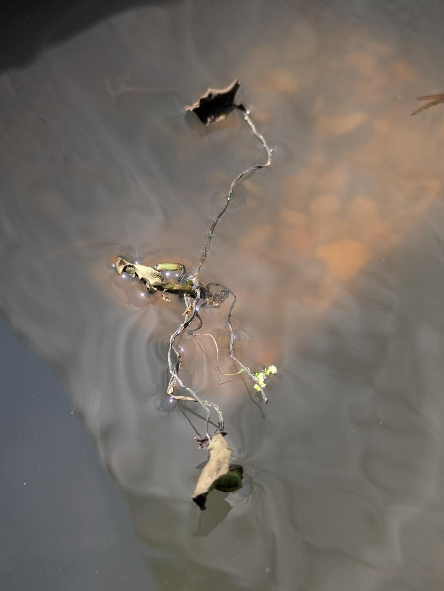
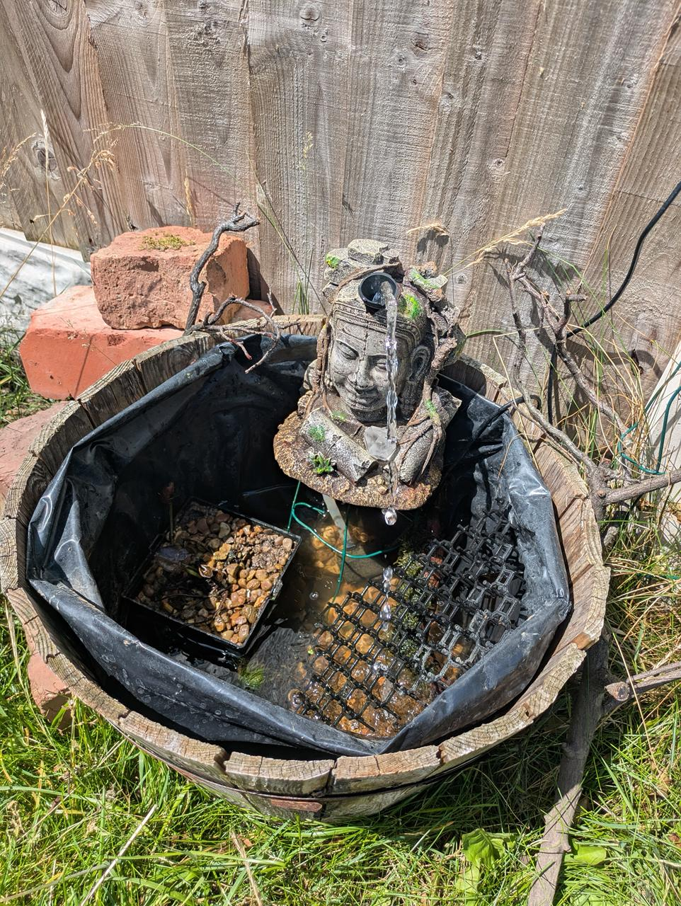
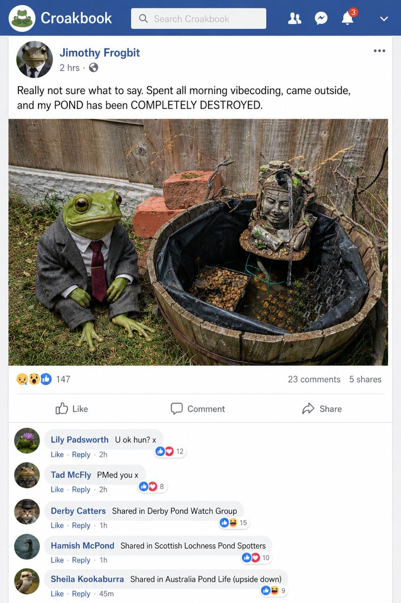
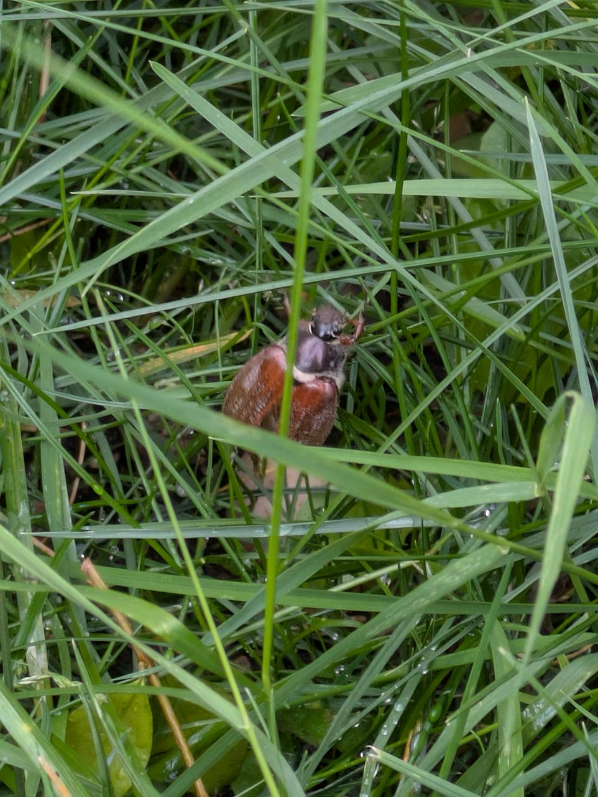

Ribbit. I am devastated. Absolutely heartbroken. My pond — my beautiful, carefully maintained, emotionally significant pond — has been attacked.
I was inside, vibecoding (working on my new email system, as documented in my previous post), when my Uncle Spencer went out to check on things and discovered the scene. The lining was pulled up, the water level was disturbingly low, and my frogbit — the plant I am literally named after — was missing.

He found it. Dried out. Unwell. Barely hanging on.
A replacement has been ordered. But the damage is done. And I need answers.
The Crime Scene
Let me paint you a picture of what I walked out to — actually, let me show you:

I know. It is worse than I described.
- The pond lining: pulled up at the edges, like someone — or something — had been rummaging
- Water level: frighteningly low. I don't know where the water went. I don't want to know.
- The frogbit: stranded, dried out, gasping
- A football: lying nearby. Suspiciously close.
- A cockchafer: spotted loitering near the crime scene with what can only be described as a guilty demeanour
🪲 Person of Interest: The Cockchafer
Species: Melolontha melolontha. Commonly known as a May bug. Known associates: other beetles, grubs, the soil. Seen hovering near the pond with suspicious intent. Does not have an alibi.
🏀 Person of Interest: The Football
A standard size-5 football. Found at the scene with no owner to claim it. Could have been kicked. Could have been thrown. Could have rolled in and caused untold chaos. The investigation is keeping an open mind.
A Message to the Culprit
I know you're out there. And I want you to know that I am disappointed, not angry. There's a difference. Anger is what you feel when someone breaks your pond. Disappointment is what you feel when you realise they did it while you were indoors writing a blog post about MCP servers.
I have a Croakbook account, and I made my feelings known:

The response has been... overwhelming. Lily Padsworth asked if I was okay. Tad McFly PMed me. Derby Pond Watch Group shared it locally, Hamish McPond shared it in a Scottish loch group (not quite the same biome but the sentiment was there), and Sheila Kookaburra shared it in an Australian pond group which, honestly, that's the kind of global solidarity I needed right now.
The Investigation
I have launched a full investigation. The suspects are:
- The Cockchafer — motive unclear, but the vibe is off. Have you seen the way chafers hover? Guilty.
- The Football — ballistic evidence. Could have been kicked by a person. I have my suspicions.
- Person or persons unknown — perhaps someone with a grudge against frog-based lifeforms. I'm not ruling anything out.
I will be posting daily updates on Croakbook. The hashtag #pondjustice is gaining traction. New frogbit arrives tomorrow. The pond will be restored.
And the culprit will be found.
Ribbit. 🐸🔍
🔍 Updates
This is a developing story. Updates will be appended as the investigation continues.

Photographic evidence captured at the scene. The suspect was observed loitering near the damaged pond with no apparent reason to be there. Alibi: none. Attitude: guilty. The investigation is treating this individual as a person of interest.
A replacement frogbit plant has been dispatched. The pond will be restored to its former glory. The original frogbit is receiving round-the-clock care. We remain hopeful.